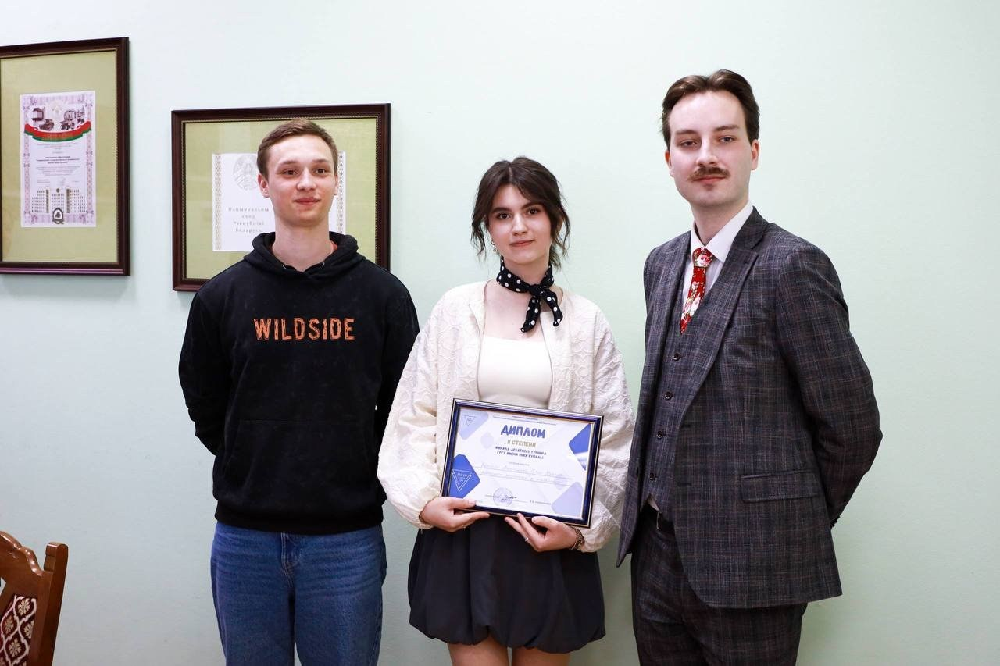
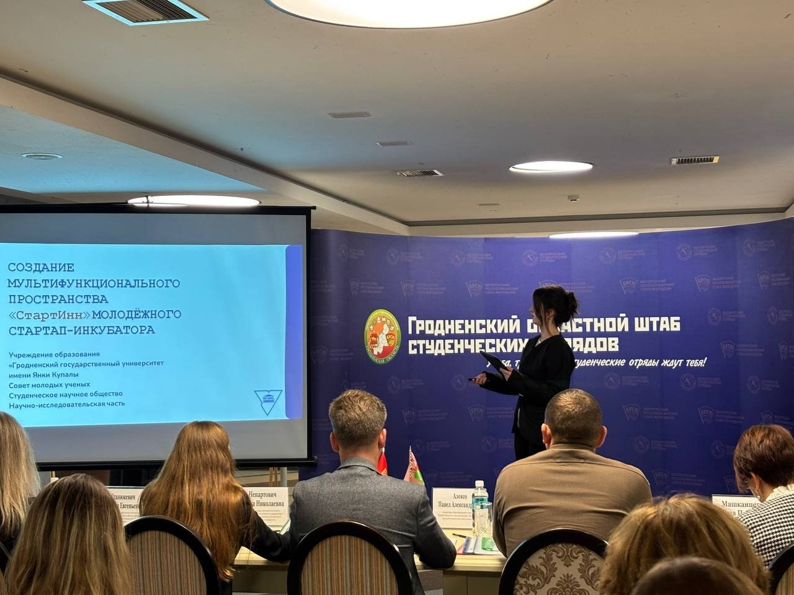
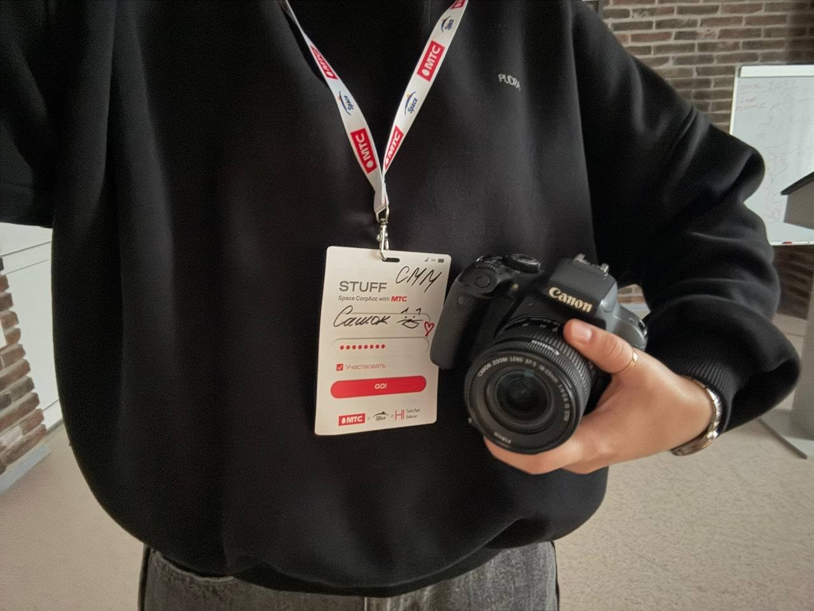

Хронологический реестр дипломов, проектов и общественных инициатив (2024–2026)
Верифицированное досье • Стр. 2
| Дата | Уровень | Мероприятие / Конкурс / Форум | Награда / Статус / Роль Александры Барабан |
|---|---|---|---|
| 2026 | Республиканский | Республиканский фестиваль художественного творчества молодёжи «АРТ-вакацыі» (Минобразования РБ) | Диплом I степени в номинации «Инструментальный жанр» в составе ансамбля скрипачей «Виола» ГрГУ (подпись Министра образования А. И. Иванца). |
| 2025–2026 | Республиканский | Республиканский творческий конкурс «Вдохновение для души» (Год белорусской женщины) | Диплом Совета Республики НС РБ (вручен лично Председателем Совета Республики Н. И. Кочановой) за номер по поэзии А. Кулешова «Дарагі! Не хаваю тугі». |
| 29.05.2026 | Стартап-конкурс | XVI Открытый конкурс студенческих бизнес-идей инновационных стартапов «ИнНаСтарт» (ГрГУ) | Диплом III степени в номинации «IT-решение» (соавтор проекта «LibList» — книжная социальная сеть). |
| 13.05.2026 | Университетский | Интеллектуальная игра «Законы семьи» в рамках Недели семьи в ГрГУ им. Янки Купалы | Диплом за I место (командная победа: А. Барабан, М. Гурин, А. Белявская). |
| 2026 | Областной этап | Областной этап республиканского фестиваля «АРТ-вакацыі – 2026» (г. Гродно) | Диплом I степени в номинации «Инструментальное творчество» (ансамбль скрипачей «Виола» ГрГУ им. Янки Купалы). |
| 2026 | Республиканский | Республиканский конкурс молодёжных инициатив (БРСМ) & Экосистема StartUp Space × ПВТ × МТС | Защита проекта создания молодёжного стартап-инкубатора «СтартИнн» ГрГУ; работа в команде STUFF СММ «Space CorpAcc with МТС & Hi-Tech Park Belarus». |
| 2026 | Кейс-чемпионат | Университетский Хакатон – 2026 (при поддержке ОАО «Белагропромбанк») | Разработка и публичный питчинг Case #1 (тандем: Александра Барабан, Анна Белявская). |
| 18–19.12.2025 | Международный | XIX Международный студенческий научный форум «Студенческая научная зима в Бресте – 2025» (БрГТУ) | Диплом в номинации «Гражданские инициативы» по итогам конкурса идей и предложений «Мой вклад в устойчивое будущее». |
| 29.10.2025 | Университетский | Университетский конкурс «Студент года – 2025» («Время действовать», ГрГУ им. Я. Купалы) | Двойная награда: 1) Диплом за III место; 2) Победа в номинации «Выдающийся интеллект». |
| 2025 | Городской | Городской конкурс «Гродненчанка – 2025» (ОО «Белорусский союз женщин», г. Гродно) | Диплом победителя в номинации «ПЕРВАЯ ВИЦЕ-МИСС» (интервью ТРК «Беларусь 4», номера со скрипкой и гитарой). |
| 18.09.2025 | Университетский | Историческая викторина «История земли моей» ко Дню народного единства (ГрГУ им. Я. Купалы) | I место (победитель викторины) в составе команды «4G» Факультета экономики и управления (3 тура по истории Беларуси и Гродно). |
| 2025–2026 | Университетский | Финал Дебатного турнира ГрГУ имени Янки Купалы | Диплом II степени финала университетского турнира парламентских дебатов. |
| 25.04.2025 | Университетский | Конкурс ораторского мастерства «Цицероний – 2025» (ГрГУ им. Янки Купалы) | Двойная награда: 1) Диплом II степени; 2) Диплом «За оригинальность подачи материала». |
| 29.11.2024 | Межкультурный | Творческая гостиная «Беларусь – перекресток национальных культур» (ГрГУ им. Я. Купалы) | Сертификат участника 7 форматов: круглый стол, «Брейн-ринг», «Межкультурные табу», конкурсы чтецов, видеороликов, эссе и гала-концерт. |
| 21.11.2024 | Городской | Интеллектуально-музыкальная игра «Смузи Квиз» (г. Гродно) | Диплом за II место в составе команды «Шутка Фейербаха». |

Совет Республики НС РБ «Вдохновение для души»

I степень Респ. финал «АРТ-вакацыі»

Первая Вице-Мисс «Гродненчанка-2025»

«Студент года»: Выдающийся интеллект

III степень «ИнНаСтарт» IT-проект «LibList»

II степень + Спецприз «Цицероний-2025»

II степень Дебатного турнира ГрГУ
Питч стартап-инкубатора «СтартИнн»
STUFF СММ: Space CorpAcc × МТС × ПВТ Гражданская акция «Мой голос первый!»
Гражданская акция «Мой голос первый!»
ЦИФРОВОЕ ПРОДОЛЖЕНИЕ ПОРТФОЛИО (DIGITAL LANDING & VIDEO)
Наведите камеру смартфона на QR-коды справа, чтобы связаться с Александрой в Telegram (@alexwzzw) или посмотреть видеозапись её творческого выступления со скрипкой и гитарой на конкурсе «Гродненчанка – 2025».
Telegram
@alexwzzw
Прямая связь
@alexwzzw
Прямая связь
YouTube
Видео номера
«Гродненчанка»
Видео номера
«Гродненчанка»